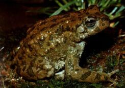

<body text="#000000" bgcolor="#FFFFFF" background="bg311.gif">

ЖАБА ДАНАТИНСКАЯ (Bufo danatensis) Предполагается, что этот вид возник в результате полиплоидизации зелёной жабы и является наиболее приспособленным к экстримальным условиям гор Средней Азии.<br> 